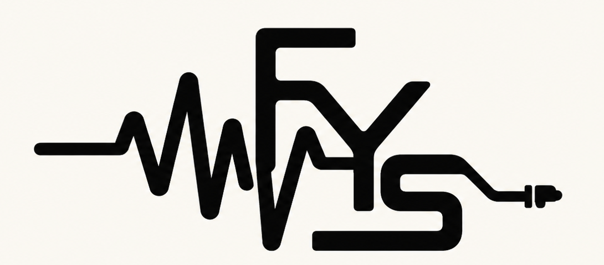

Your Mix Trash
AU + VST3
Universal Lite and Full builds are packaged separately. Analysis runs inside the plugin with no background service. Ableton beta QA will validate scanning, pass-through audio, UI, and set recall.

Fix Your SoundAudio tools for real mixesMac-first support
Fix Your Sound ships from one Mac codebase into Audio Unit and VST3 formats. Logic Pro is the verified path; the Ableton Live VST3 candidate is signed, notarized, plugin-validator tested, and entering hands-on beta validation.
Your Mix Trash
Universal Lite and Full builds are packaged separately. Analysis runs inside the plugin with no background service. Ableton beta QA will validate scanning, pass-through audio, UI, and set recall.
BassPhat
Universal Lite and Full builds keep separate identities. Ableton beta QA will validate audio, automation, bypass, and set recall.
Plugin Suite
The suite should make both products available without hiding which installer added which plugin.
Ableton capability